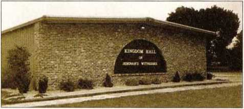
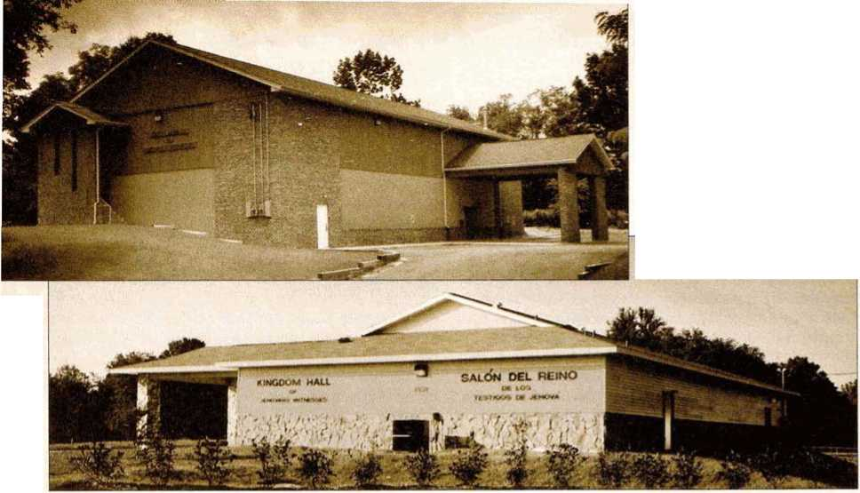
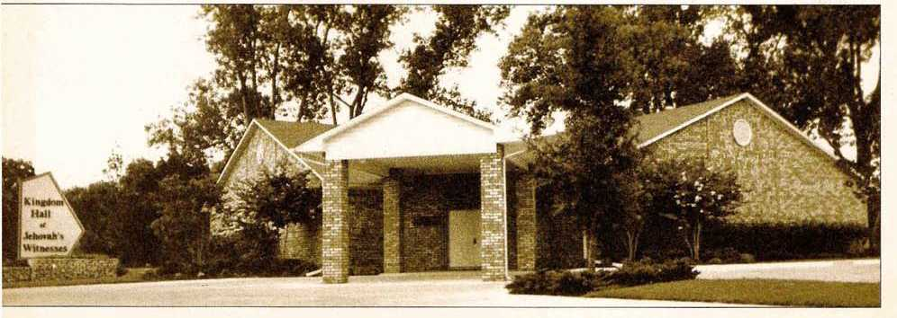

November 1992 For United States of America Vol. 35, No. 11
The Power of God’s Word
1 The Word of God is powerful. (Heb. 4:12) Today, evidence of this can be seen in the millions of lives that have been changed for the better as people have made personal application of the things they learn from the Bible. The same was true in the first century when the disciples of Jesus shared the knowledge of God's Word with others—Rom. 12:2.
2 In order for people to benefit from the Bible’s teachings, they need to recognize the Bible as the Word of God. (1 Thess. 2:13) During November we will be giving people the opportunity to learn more about the value of the Bible as we make the New World Translation of the Holy Scriptures and the book The Bible—God’s Word or Man’s? available to those who are genuinely interested.
3 Why not review some of the interesting features of the God’s Word book? The table of contents will lead you to chapters that discuss miracles, sup
Do You Value Our Literature?
1 Diamonds and other gemstones are valuable not only because of their beauty but also because of the high cost of finding them and mining them. The knowledge of Jehovah and Jesus Christ is of even more excelling value, and our publications are the only ones in the world that explain these spiritual riches in depth and with godly wisdom. (Rom. 11:33; Phil. 3:8) How can we demonstrate true appreciation for our literature?
2 A number of individuals and family groups regularly set aside a contribution to be taken to the Kingdom Hall and placed In one of the boxes labeled “Contributions for the Society’s Worldwide Work—Matthew 24:14.” Individuals make additional contributions to the worldwide work when they pick up supplies of literature or magazines and when they deposit contributions received in the field ministry.
3 Another way to demonstrate appreciation is to be selective in offering literature to people we meet in field service. We would not think of giving an expensive diamond to an infant, who posed contradictions, scientific harmony, prophecies, and other subjects. There are many photographs and illustrations. Scholarly references are listed in the back of the book. These features will enable us to present the book with genuine enthusiasm, firmly convinced that people in our territory need to hear the good news it contains.
* How can we use this book when we encounter a householder who already believes that the Bible is God’s Word? Interest may be cultivated by highlighting either chapter 2, which relates the historical account of the Bible’s fight to live, or chapter 14, which encourages the reader to accept help in order to have a better understanding of the meaning of the Bible for us today. Reading the scriptures noted in chapter 14 will assure the householder that your discussion is Bible-based.
5 Many refuse to accept the Bible as the word of God because of the conduct could not comprehend its value. Neither do we give valuable literature to individuals who have no appreciation for spiritual things. (Compare Hebrews 12:16.) Our generous giving of ourselves and our literature should be regulated by a discerning attitude. Is the householder willing to converse? Does he pay attention when we speak, respond to questions we ask, and follow along as we read from the Bible? If such interest is manifest, we are glad to leave an appropriate publication. When we conduct studies in our publications, people are helped to learn what the Bible teaches and the way is opened for them to build a relationship with Jehovah. The true benefit to be derived from our literature is determined by how it is used.
4 Literature left on a shelf at the Kingdom Hall or in our home is not accomplishing its purpose, and its value is not being realized. Even older issues of the magazines, brochures, bound books, and tracts should be put to good use. When was the last time we took an Inventory of the supply of literof Christendom. Chapter 3, “The Bible’s False Friend." can be used effectively in this situation.
4 When we read from our Bible, the householder may comment on the clarity of language used in the New World Translation. Or we may find that the householder shows interest in our message but does not have a Bible. In these cases we may describe the unique features of the Bible we use and the reasons why we prefer it to others. Among other things, we could point to the list “Bible Words Indexed” that helps to locate familiar scriptures. Also, the feature “Bible Topics for Discussion" at the back of the Bible can help interested ones find answers to many commonly asked questions.
’ By means of the Bible, Jehovah has made known his dealings with mankind and has thus acquainted us with his marvelous personality. May we use the New World Translation and the God’s Word book effectively in helping others to learn about Jehovah and the power of his Word!—2 Cor. 10:4.
ature we already have on hand? We may be surprised to discover how much has accumulated. Is the literature we have still in good condition—not yellowed with age, tom, or soiled? If so, we should make every effort to distribute this in the field ministry. Damaged literature can be retained for personal use or appropriately discarded. Even while concentrating primarily on the current offer, we may decide at times to use a different publication.
5 Always give careful thought to how much literature you actually need for distribution purposes. Good judgment is necessary. While an adequate quantity is essential, especially if you are pioneering, there is no need to maintain a large personal supply of literature, since more can be obtained at the Kingdom Hall before and after meetings. Equip yourself with sufficient literature to get the month started and get more as your supply is used up.
6 Our publications are most valuable when placed in the hands of people who appreciate God’s Word of truth. May all of us be wise and discreet in the use of what has been provided, thus showing how highly we value our literature.
Song 49
10 min: Local announcements and selected Announcements from Our Kingdom Ministry. Call attention to information in box about branch addresses. Commend publishers for the part they; are having in Kingdom-preaching work. Suggest talking points in current magazines for use in local territory.
15 min: “The Power of God’s Word." Questions and answers. Encourage all to read the tract Why You Can Trust the Bible, taking note of lines of reasoning and simple, potent argumentation for use in field service.
20 min: “Lay the Groundwork on Your Initial Call.” Brother handling this part Introduces four demonstrations illustrating one of the two introductions mentioned in paragraphs 2 and 3 and demonstrating each of the points in paragraphs 4,5, and 6. The last demonstration should show how both the Bible and the God’s Word book can be presented when genuine interest is manifested on initial call.
Song 52 and concluding prayer.
Song 141
5 min: Local announcements and Theocratic News.
15 min: “Do You Follow Instructions?" Talk by presiding overseer based on article in October 1,1990, Watchtower, pages 30-1. Local application should be made to specific needs: reporting field service time, Kingdom Hall cleaning,
Be an Auxiliary Pioneer in December
1 All of us do well to ask ourselves: ’To what extent will I be a bearer of light during December? Can I be an auxiliary pioneer?’—Matt. 5:14,16.
2 Baptized young ones generally have extra time off from school during the holiday season. Some parents and other adult publishers may be able to join these in expanded field service during the month. Many who work full-time will likewise have some additional time to dedicate to this lifesaving ministry.
3 A key factor in being able to serve being on time for meetings for field service, controlling children in Kingdom Hall, and so forth. Commend where appropriate, and help all discern how entire congregation benefits and the work of appointed servants is made easier when everyone follows instructions.
10 min: “Be an Auxiliary Pioneer in December.” Warmly and enthusiastically cover material by means of questions and answers. Announce local arrangements for field service and special arrangements to be made for larger groups during December.
15 min: “Do You Value Our Literature?" Encouraging talk.
Song 27 and concluding prayer.
Song 179
15 min: Local announcements, including accounts report and donation acknowledgments. Warmly commend congregation for financial support of local congregation as well as Society’s Kingdom Hall Fund and Society’s worldwide work. Outline special field service arrangements for holiday period, where appropriate. Parents should especially prepare schoolchildren for issues that may arise during the holiday season, using pages 17-21 of the School brochure. ^.,1^'
20 min: “How to Cultivate Interest." Talk and demonstrations, to be handled by service overseer. Demonstrate techniques outlined in paragraphs 5 and 6. Keep demonstrations simple and easy to follow.
10 min: “Choose Appropriate Talking as an auxiliary pioneer is our willingness to put forth the required extra effort. (Luke 13:24) If we carefully organize our activity, including family and congregation matters, time can be made available so that we may experience the joy of serving as an auxiliary pioneer.
4 Will you be able to expand your ministry during December? Doing so can help you to feel more confident at the doors and result in upbuilding experiences. Greater happiness can thus be yours.—Acts 20:35.
Points." Discussion between husband and wife preparing for field service.
Song 198 and concluding prayer.
Song 54
10 min: Local announcements. Present a demonstration of how a talking point from a current magazine can be used this weekend. Use suggestions given at last week’s Service Meeting.
20 min: “Looking to Jehovah in All We Undertake”—Part 1. Discussion of paragraphs 1 to 13 of insert by two brothers, preferably those working with Regional Building Committee in area. Local experiences may be included. Warmly encourage all who qualify to volunteer.
15 min: Why We Do Not Celebrate Birthdays. Discussion between elder and preteenage fatherless boy wh'o is a good example. Boy approaches elder to ask for his help in dealing with pressure from his peers to attend a birthday party. He understands it is wrong but would like to be able to explain it clearly to others. Elder kindly and in simple language reviews with boy information on pages 30-1 in September 1, 1992, Watchtower and pages 68-70 of the Reasoning book.
Song 24 and concluding prayer.
Song 104
10 min: Local announcements.
15 min: Using the Greatest Man Book to Let Our Light Shine in December. Talk with demonstration. Encourage all to have field service points well In mind. Suggest talking points based on chapters considered in Congregation Book Study earlier in month.
20 min: “Looking to Jehovah in All We Undertake”—Part 2. Question-and-answer consideration of p'aragrapKT 14 to 25 of insert. Emphasize share each publisher can have in (1) volunteering if qualified and circumstances allow, (2) contributing financially to Society’s Kingdom Hall Fund, and (3) supporting congregation activities when others are away on a construction assignment.
Song 4 and concluding prayer.
Schedule for congregation studies in the book The Greatest Man Who Ever Lived.
November 2: Chapters 7-10
November 9: Chapters 11-13
November 16: Chapters 14-16
November 23: Chapters 17-19
November 30: Chapters 20-22
1 We need God’s blessing on all we undertake. The wisdom of our realizing this is well stated at Psalm 127:1: “Unless Jehovah himself builds the house, it is to no avail that its builders have worked hard on it. Unless Jehovah himself guards the city, it is to no avail that the guard has kept awake.” Thus, we should make sure that we consider the Creator in all our activity.
3 Observed by Others: Today, those acquainted with construction methods are greatly impressed with what Jehovah’s Witnesses are accomplishing in erecting quickly built Kingdom Halls. For example, in one area a local newspaper commented: “It was an invasion of the Jehovah[’s] Witness Volunteer labor force who came for the three-day. ‘Kingdom Hall Building Project,’ and a three-day project it was.... In three days the Kingdom Hall Building Committee had come and gone, but what they accomplished will long be remembered.”
’Another newspaper observed: “You haven’t seen a pile of brick and lumber become a building until you’ve watched a group of Jehovah(’s] Witnesses swing a hammer. Before your very eyes, a building constructed by the Witnesses goes from a simple concrete slab to studded walls, room partitions and a roof in less time than it would take a couple of ordinary carpenters to get their supplies and tools together.”
Columbus, Kansas—Renovated athletic club
4 In Montana, where someone likened the project to a barn raising, a reporter observed: “Barn raising? Maybe —but barn raising elevated to the precision of a moon mission launch and the efficiency of an Indianapolis 500 pit-stop crew.”
5 It is gratifying to see that tens of thousands of volunteers have offered to assist with these Kingdom Hall construction projects. Such a willing spirit is indeed commendable and is in harmony with the statement at Psalm 110:3: “Your people will offer themselves willingly.” One city overseer noted: “We are one big family working together to build a Kingdom Hall." However, more and more skilled and general workers are needed as the construction of new Kingdom Halls throughout the country continues. It is as the headlines of one newspaper stated, “Many hands make for light work.”
6 What a memorable experience it is to share in such a project! One Witness commented: “It is really difficult to put into words exactly how it felt to see our own Kingdom Hall being built. I think this project of working together made us feel like a family, knowing that each one did his part, whether it was picking up nails or fastening the shingles. Our unity and organization surely proved that we have Jehovah’s backing. This is a summer we will all remember as being special.” After working on a Kingdom Hall project, someone wrote, “I’m still studying in the United in Worship book. This project was a superb demonstration of the unity that is described in the book. There are no arguments. Working side by side this way with the brothers has made me feel a lot closer to them. I really feel a part of this organization. There’s no other way of life. No one can walk away from such an experience and feel alone. Jehovah’s spirit is here!"
10ne newspaper openly admitted: “Jehovah’s Witnesses’ success in the ‘quick build’ of their places of worship is found not only in cooperation, but dedication.” A faculty member of a university visited a nearby building project and commented: “This is wonderful! As I drove up, I saw license plates from all over Nebraska and several other states. You know they can talk all they want to about their formal religion, but this is a true Christian spirit”—Neh. 2:18.
’Others may even be moved to express support, as did a businessman in the neighborhood where a new Kingdom Hall was built. After the building was finished, he came over before a Sunday meeting and, saying that he wanted to be a good neighbor, made a contribution to help out with the project.
9 Designing and Locating Kingdom Halls: So that dedicated resources may be used wisely, careful consideration must be given to Kingdom Hall design and location. The buildings should be modest. The Our Ministry book emphasizes on page 61 that “the Kingdom Hall, as a place of worship, should not be a pretentious building designed to impress others.... Its purpose is functional. (Compare Acts 17:24.) It should be a comfortable and convenient place for conducting Christian meetings that help us to grow spiritually and to learn about Jehovah, and that encourage us to share in his Kingdom service.” Experience has shown that generally the publishers are best served by a Kingdom Hall when it is located as close as possible to where they live.
10 It is usually preferable to have two separate Kingdom Halls in different locations rather than a doubleauditorium Kingdom Hall. Each of these may accommodate two or more congregations if their location is wisely chosen. However, in some situations two Kingdom Halls have been built on the same site. The high cost of property in some densely populated urban areas has made this necessary.
11 Several factors should be considered before undertaking the construction of a multiple-auditorium facility: How far removed from the territory of each congregation is the building? Is the facility easily accessible? Would Bible students and other newly interested ones attend meetings at the Kingdom Hall when it is not close to where they live? Might the initial enthusiasm of the publishers wane because of the extra travel time and expense over a prolonged period of time? What impact would a multiple-auditorium Kingdom Hall have on the surrounding community? As more congregations use a Kingdom Hall, more traffic is generated for the area. Would this cause difficulties with the neighbors, especially in residential areas? Would it cause traffic or parking problems? Careful consideration needs to be given to these and other pertinent factors from the outset if congregations are considering the possibility of constructing a Kingdom Hall with more than one auditorium.
12 What Has Been Accomplished: Since the Society Kingdom Hall Fund was established nine years ago, funds have been made available to assist in constructing 1,129 new Kingdom Halls in this country. These Kingdom Halls accommodate 1,675 congregations. What an outstanding expression of Christian love! Each year about 200 new Kingdom Halls are built, and another 200 existing Kingdom Halls are remodeled. Thousands of brothers and sisters lovingly give of themselves to assist congregations with their Kingdom Hall construction projects. (Phil. 2:4) Many of these volunteers also help with district convention and circuit assembly work, and some brothers are on other special assignments from the Society, such as Hospital Liaison Committees and Assembly Hall Committees.
13 Those serving on the Regional Building Committees are certainly to be commended for their generous and willing spirit in helping meet the massive building needs within Jehovah’s expanding organization. “Their willing spirit affects all of us,” reported one
Contributions to the Society Kingdom Hall Fund assisted with construction costs for all the Kingdom Halls pictured in this insert
Oakland, Maryland
Rogers, Arkansas
Philadelphia, Pennsylvania Double-auditorium Kingdom Hall
Orlando, Florida
local building committee, “but Jehovah’s loving provision of skilled direction and decisive leadership through the appointment of Regional Building Committees has proved to be invaluable. As a local committee, we would like to express our heartfelt thanks to the Society for making such a provision. Without this provision and the help of Jehovah’s holy spirit, this project would never have succeeded.” Such sentiments expressed about the leadership of a Regional Building Committee are certainly felt by many, many more.
H More Volunteers Needed: With the continuing increase in congregations, there is a need for more Kingdom Halls. Additional finances and workers are needed to meet this demand. During the last service year, the number of congregations in the United States increased by 261, and more Kingdom Halls are required to accommodate these new congregations.
1S While many brothers and sisters continue to assist with Kingdom Hall construction, giving freely of their time and effort, there is a call for more help just as there is a need for more workers in the harvest field. (Matt. 9:37, 38) Most regional committees report that having additional willing workers available for Kingdom Hall projects will lighten the load of those who have been carrying this responsibility for years.—Isa. 6:8; Gal. 6:2.
16 Brothers who apply for this avenue of theocratic service should be mindful of following through with their commitment. (Matt. 5:37; Col. 3:23, 24) Department overseers make direct contact with the volunteers to let them know when they are scheduled on a construction site. Plans are made depending upon the stated availability of the volunteers. Thus, it is important that all report as agreed upon, since each department needs to care for its work at a set time so that other departments can keep their work on schedule. Scheduling the work in this manner makes it possible for workers to return to their families and home congregations just as soon as their portion of the work is completed.
17 Each Regional Building Committee schedules the workers within its assigned area. This works well, since the responsible brothers are careful to schedule workers so that they are not burdened or imposed upon. Workers are not asked to help out in another committee’s area except by special arrangement through the Society and upon request from a regional committee that is temporarily overloaded. If another nearby regional committee has a light load at the time, the Society may ask it to assist.
18 Who Qualify: Whenever a Kingdom Hall building project is undertaken, volunteers from the congrega-tion(s) that will use the new or renovated facility and from nearby congregations provide the general labor force. Some of these become trained and thereafter qualify as experienced or even skilled workers so that they can submit Kingdom Hall Construction Worker Questionnaires.
19 Those specifically needed by the Regional Building Committees month by month are those who have
experience in the construction trades and who volunteer to assist with needed Kingdom Hall construction. These must be in good standing in the congregation and approved by the local body of elders. If you are in this category, could you arrange your affairs to assist with this feature of Jehovah’s service? (Neh. 4:6) If so, obtain a Kingdom Hall Construction Worker Questionnaire from the presiding overseer or secretary in your congregation and submit it right away.
20 Additionally, there are spiritually mature brothers who are serving as elders and ministerial servants and who have potential for oversight. Although their construction experience may be limited, these also may submit questionnaires. Many in this category help with nonconstruction departments. Others are trained so that they can be used more extensively in the future. Elders and ministerial servants are encouraged to consider seriously whether they can make themselves available for this work that brings praise to our Father, Jehovah.—Compare 1 Samuel 3:8; Matthew 4:20.
21 All Can Have a Share: All can show a fine spirit toward this essential activity by taking up the slack in the congregation when some are working on a Kingdom Hall project for a portion of a weekend. Certainly none of us would want to discourage these volunteer workers in any way by intimating that their labors of love in Kingdom Hall construction are not sacred service. (Prov. 24:10; Heb. 6:10) Of course, balance is needed, and that is why the Regional Building Committees are thorough in working out schedules so that volunteers are not away unduly from their home congregations.
22 Even if circumstances may not permit our volunteering in connection with actual construction work, there is one vital aspect of the matter in which all may share. What is that? Honoring Jehovah with our “valuable things.” (Prov. 3:9) We can be confident that Jehovah is highly pleased when we give loving financial support toward more Kingdom Hall construction. The contributions to the Society Kingdom Hall Fund are very much appreciated, and as more congregations are formed, the need for new and improved facilities continues. (Acts 20:35; 2 Cor. 9:6, 7) In the first century, when a need arose, the apostle Paul encouraged the Corinthians: “Nevertheless, just as you are abounding in everything, in faith and word and knowledge and all earnestness and in this love of ours to you, may you also abound in this kind giving.”—2 Cor. 8:7.
23 Far-Reaching Benefits: Since Regional Building Committees are provided with guidelines from the Society and additional training, congregations building or renovating Kingdom Halls can benefit by seeking advice from these committees. Elders are wise to contact the Regional Building Committee before purchasing property and then work closely with these experienced brothers throughout the project.—Prov. 15:22.
24 Truly, Jehovah is greatly helping us to erect many houses of worship to his praise. Brothers and sisters are being moved by a self-sacrificing love. This is exactly the type of love that Jesus said would clearly identify his genuine followers. (John 13:34,35) Just as Jesus put the interests of others ahead of his own, so do they. Very likely, the willingness and increasing skill of Jehovah’s servants will be employed with even greater benefit in God’s new world.
25 Yes, those who share in constructing buildings for the worship of Jehovah find Psalm 127:1 to be true. Though skilled workers volunteer their time and effort for the quick erection of fine Kingdom Halls, it is Jehovah’s blessing that guarantees success. Today, even more Kingdom Halls are needed. Since its inception, the Society Kingdom Hall Fund has been able to assist many congregations with their Kingdom Hall projects. May all of us continue to give freely of our time and “valuable things” as we look to Jehovah to bless our efforts.—Prov. 3:9.
Fort Worth, Texas
■ Literature offer for November: New World Translation of the Holy Scriptures with the book The Bible—God’s Word or Man’s? December: The Greatest Man Who Ever Lived. January: Any 192-page book published in 1983 or earlier. If the congregation has no stock of such books to be offered, the book True Peace and Security—How Can You Find It? should be offered and may be requested from Brooklyn. February: You Can Live Forever in Paradise on Earth. NOTE: Congregations that will need the above-mentioned campaign Items should request them on their next monthly Literature Request Form (S(d)-14).
■ Secretaries are to provide replacement Pioneer Service Identification cards only for pioneers who move into their congregation from within the United States (not including Alaska, Hawaii, or Puerto Rico). Please note our letters dated August 1,1989, and January 1, 1991, in this regard. Also, before submitting the S-206 form advising the Society of pioneers going off the list, please review carefully the instructions on the form and answer all pertinent questions.
■ Adjustments have been made in the School Guidebook to bring expressions and procedures up to date. The only significant change, on pages 100 to 102, affects the Theocratic Ministry School, making the procedure correspond with the instructions printed in the annual Theocratic Ministry School Schedule. This adjusted School Guidebook is now available in English and Spanish and may be requested by congregations as needed.
■ Congregations should begin requesting the 1993 Yearbook of Jehovah’s Witnesses on their November literature requests. (See the Watchtower Publications List, paragraph 10.) The Yearbook will be available in Czech, Danish, Dutch, English, Finnish, French. German, Greek, Hungarian, Italian, Japanese, Korean, Norwegian, Portuguese, Slovak, Spanish, and Swedish. Until the Yearbook is available and shipments are made, it will appear as “Pending” on congregation packing lists. Yearbooks are special-request items.—See the Watchtower Publications List, paragraphs 24 and 25.
■ New Publications Available: Albanian: The Divine Name That Win Endure Forever; The Government That Will Bring Paradise. Croatian: Will This World Survive? (Tract No. 19). Czech: “AH Scripture Is Inspired of God and Beneficial’'; The Divine Name That Will Endure Forever; Wid This World Survive? (Tract No. 19). Danish: Does God Ready Care About Us?; Wid This World Survive? (Tract No. 19). Dutch: Aid to Bible Understanding (A-Z). English: Watch Tower Publications Index 1986-1990. French: Does God Ready Care About Us? German: “Ad Scripture Is Inspired of God and Beneficial’’ (Revised); Does God Ready Care About Us?; Insight on the Scriptures, Volume 2 (K-Z); Wid This World Survive? (Tract No. 19). Greek: Does God Really Care About Us?; Win This World Survive? (Tract No. 19). Hungarian: Does God Ready Care About Us?; Wid This World Survive? (Tract No. 19). Italian: Does God Ready Care About Us?; Wid This World Survive? (Tract No. 19). Japanese: Win This World Survive? (Tract No. 19). Korean: Does God Ready Care About Us?; Wid This World Survive? (Tract No. 19). Lingala: The Greatest Man Who Ever Lived. Polish: Does God Ready Care About Us? Portuguese: Insight on the Scriptures, Volume 3 (Misma-Zuzins). Romanian: How Can Blood Save Your Life?; Wid This World Survive? (Tract No. 19). Russian: Does God Ready Care About Us? Slovak: The Divine Name That Win Endure Forever; United in Worship of the Only True God. Sranantongo: My Book of Bible Stories. Swahili: Does God Ready Care About Us? Thai: Does God Ready Care About Us?; Wid This World Survive? (Tract No. 19).
Please note that each year an updated list of the offices of Jehovah’s Witnesses around the world Is provided in the back of the Yearbook. This list is for your convenience and use. You can save time and expense by referring to the current Yearbook rather than calling Brooklyn for addresses of branch offices in other lands.
Bangladesh: The 39 publishers reporting in June averaged 17 hours in the field ministry. The first two local brothers to be appointed as special pioneers are working with an isolated group.
Ethiopia: A new peak of 3,585 publishers reported in June.
Av. Av. Av. Av.
Number of: Hrs. Mags. R.V. Bi.St.
|
Sp'l Pios. |
144 |
120.5 |
67.0 |
51.3 |
5.3 |
|
Pios. |
65,175 |
59.2 |
22.1 |
19.8 |
2.5 |
|
Aux. Pios. |
29,870 |
58.4 |
20.5 |
14.1 |
1.3 |
|
Pubs. |
809,774 |
10.1 |
5.4 |
3.8 |
0.5 |
TOTAL 904,963 Baptized: 500
1 What can we do to encourage people to read The Watchtower and Awake! regularly? We need to have Interesting points to talk about when recommending the magazines to others. If we have become well acquainted with the people in our territory and have them in mind when we read the magazines, we can be looking for talking points to capture their Interest
2 In some areas people may be of similar background, making it quite easy to note something that would be of general interest. But in other localities, we may find people from many different backgrounds. If we have a number of talking points in mind, we can pick one that best suits each person we meet.
5 Do not be quick to discard older issues of the magazines when receiving the newer ones. One brother usually holds up three or four issues of The Watchtower to a householder and allows him to pick the one he wants to read. If we find we are receiving more magazines than we can distribute, we should consider adjusting our order.
* By always using appropriate talking points, we may motivate others to read our magazines and perhaps start such ones on the road to life. (Matt. 7:14) If we give careful consideration to this important matter, we can be assured of Jehovah’s blessing.

1 Making effective return visits becomes easier when we lay the proper groundwork on the Initial call. The Reasoning book can help us do that.
2 The following presentation is based on the second introduction on page 10 of the Reasoning book, under the heading “Bible/God."
After a friendly greeting, say:
■ "We find that more and more people today feel uncertain as to where they can find practical answers to mounting everyday problems. Have you found that to be true? [Allow for response.] It used to be that people looked to the Bible for help. But now many say they have doubts. How do you feel about the Bible?” If the householder expresses skepticism about its authenticity, take out the tract Why You Can Trust the Bible and read the second and third paragraphs on page 2. If the householder agrees that the Bible is God’s Word, look up and read the scriptures cited in the second paragraph on page 2 of the tract, and briefly discuss these with him.
3 If there are many in your territory who express disbelief, try adapting the fifth Introduction on page 10 of the Reasoning book to arouse their interest.
You could say:
■ “In view of all the conflicts in the world today, many sincere people find it difficult to believe in God. Or if they do believe in him, they do not believe he can solve the problems we face. How do you feel? [Allow for response.] Notice what this tract has to say about men, science, and the Bible.” Then begin reading the fifth paragraph on page 3 of the tract Wfty You Can Trust the Bible.
4 Raise Questions From the Tract to Set Up Your Next Visit: Plan for your initial call to be only the beginning of a series of fruitful visits. Do not feel that you need to go into much detail; neither should you be so abrupt that the householder feels you are not genuinely interested in him. After reading two or three paragraphs from the tract, raise a question that can be discussed on a future visit.
5 For example, you could direct attention to the third paragraph on page 4 and ask: “Do you think the Bible provides enough evidence to trust what it says about the future?” This will establish a reference point for the return visit, when you might consider chapters 9 and 10 in The Bible —God’s Word or Man’s?
8 If the householder is genuinely interested and seems to appreciate the information presented, you may wish to offer the God’s Word book on the initial call. Or if the situation warrants, you may offer the New World Translation. Where appropriate, briefly explain that our work is supported by voluntary donations and that you would be pleased to accept a small contribution for that purpose.
’ If we view each householder as a potential disciple, we will endeavor to use our concluding remarks to lay the groundwork for a return visit.
1 From one dictionary we learn that “cultivate” means to prepare for or foster growth. But this word can also mean to improve by labor, care, or study. Making disciples is an important objective of our ministry. (Matt. 28:19, 20) Therefore, we need to put forth effort to cultivate the interest we find in the field ministry.
’Repeated visits are usually required to foster the spiritual growth of honesthearted individuals. Productive return visits should lead to a regular Bible study.
3 Do you call back only on those who show great interest? You do not need to place literature in order to return. One pioneer who does not usually leave much literature on the initial visit calls back on everyone who is friendly. A good discussion in which you share a Scriptural thought provides a fine basis for a return visit.
4 Use Tracts to Start Bible Studies on Return Visits: The various subjects of our tracts are relevant for our day. They emphasize the need for taking in Bible knowledge and applying it.
You could say:
■ “Last time we talked about some reasons for putting trust in the Bible. What kind of future does the Bible talk about?" Begin reading from the second paragraph on page 3 of the tract Life in a Peaceful New World. Look up the scriptures. Ask the householder for his reaction to what you are reading. Conclude by considering the material under the subheading “How It Is Possible for You” on page 5.
5 In a similar manner, you could use the tract What Hope for Dead Loved Ones?
You might say:
■ “As we considered briefly before, many people lack confidence in God. For example, they ask, ‘If God is so powerful, why does he allow people to die?' This tract can help answer that question." Call attention to the section beginning with the fourth paragraph on page 2. Ask a relevant question after each paragraph, and consider cited scriptures that are not quoted. If your congregation now has a supply of the new brochure Does God Really Care About Us?, it could be used in a similar way.
6 Continuing the Study: By following the methods suggested here, you are starting a home Bible study. In order to further the discussion on a regular basis, ask the householder at the conclusion of your visit: “Did you notice that we answered important questions in just a few minutes? Next week we could spend a little more time talking about the resurrection hope or another subject that interests you.” You could use just one of the questions mentioned In these articles each time you visit. At an appropriate time, you can switch to a brochure or start a study in the Live Forever book.
7How satisfying it is to conduct a Bible study with a genuine truthseeker! May we be blessed with a productive ministry by applying the suggestions given on how to cultivate the interest we find.
® 1992 Watch Tower Bible and Tract Society ot Pennsylvania. All rights reserved Our Kingdom Ministry (USPS 295-360) is published monthly by Watchtower Bible and Tract Society of New York. Inc., and International Bible Students Association. 25 Columbia Heights. Brooklyn. N Y 11201 Second-class postage paid at Brooklyn N.Y., and at additional mailing offices POSTMASTER: Send address changes to Watchtower. 25 Columbia Heights. Brooklyn. NY 11201 Printed in U.S.A.
8